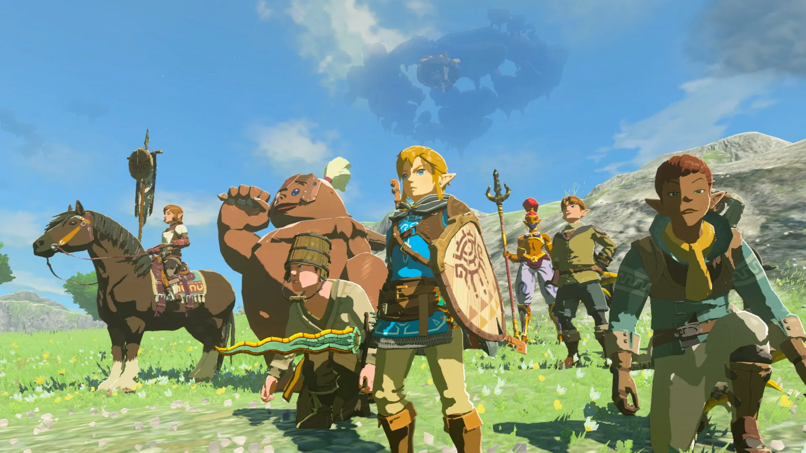

Tipus de Jugadors
En el món dels videojocs, hi ha diferents tipus de jugadors, cadascun amb les seves pròpies motivacions i preferències. A continuació es detallen els principals tipus de jugadors juntament amb una descripció i exemples en cada apartat:
Killers
Els Killers són jugadors que es centren en la competició i en derrotar els altres jugadors. Busquen la emoció de la victòria i sovint es converteixen en experts en el joc per aconseguir-ho. Exemple: Un jugador que passa hores practicant per guanyar un torneig.
Achievers
Els Achievers són jugadors que es centren en aconseguir objectius i complir reptes dins del joc. Busquen la satisfacció de superar obstacles i aconseguir recompenses. Exemple: Un jugador que completa totes les missions d'un joc.
Socialisers
Els Socialisers són jugadors que es centren en la interacció amb altres jugadors i en la creació de comunitats dins del joc. Busquen la diversió i l'amistat. Exemple: Un jugador que passa hores parlant amb altres jugadors dins del joc.
Explorers
Els Explorers són jugadors que es centren en descobrir i experimentar dins del joc. Busquen la novetat i l'aventura. Exemple: Un jugador que passa hores explorant tots els racons d'un món obert.
